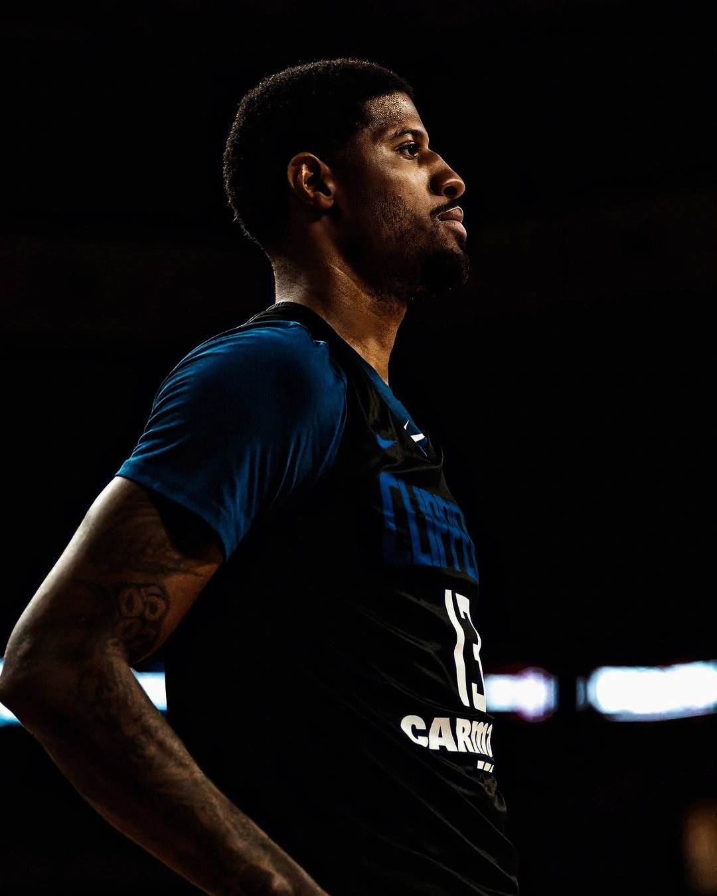

个人简介

姓名：保罗乔治
国籍：美国
- 民族：不详
出生日期：1990.5.2
出生地：美国加利福尼亚州帕姆代尔
主要成就：
- 美国职业篮球运动员 现任NBA球员 效力于快船队
- 原来身为24号球衣的他在球场上不幸小腿断裂 后来涅槃重生 再次回到球场 并身穿13号球衣
- 保罗·乔治于2010年通过选秀进入NBA，先后效力于步行者队、雷霆队以及快船队
- 8次入选全明星阵容
- 没有人知道24号的他如果不断腿 荣誉会怎么样进展 他短腿之后所有人都觉得他从此职业生涯就此结束了 但他没有放弃依然回到了球场
- 他涅槃重生的故事不断地激励着我在人生的路上不断前进